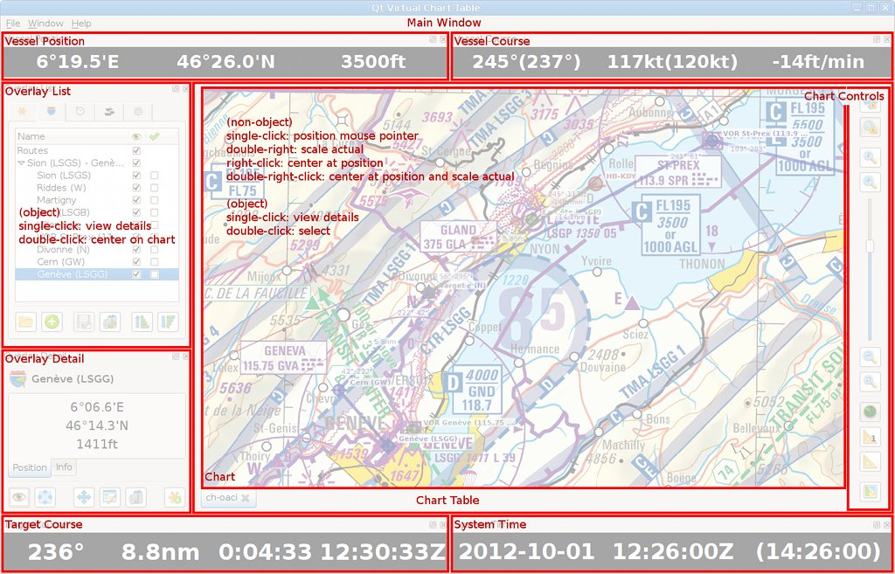

- Usage Overview
- Using the Chart Table and Controls
- Using the Overlay List
- Using the Overlay Detail
- Changing the Application Settings
- Create your own Charts
Usage Overview
Using the Qt Virtual Chart Table (QVCT) comes down to working with:
| Charts, stored on disk in any format supported by Geospatial Data Abstraction Library (GDAL) (but preferrably GeoTIFF). | |
| Landmarks, which are geographical points which may be useful to plan your navigation: harbours/airports, navigational aids, easily identifiable places, etc. | |
| Routes, which are collections of ordered waypoints which you plan to follow in order to go from one point to another. | |
| Tracks, which are the recorded path followed by geo-localized vessels (see below). | |
| Vessels, which are either your own vessel - ship, aircraft, etc. - of any other vessel you wish to appear on your chart(s). | |
| Devices, which are navigation devices that allow: either to provide geo-localization data (time, position, course) for a particular individual vessel (e.g. with a GPS-like device) or automatically create vessels as part of a dynamic flotilla and as they appear "on the wire" (e.g. with an AIS-like device). |
The various components of the interface which shall be mentioned in this manual are:

Note that all but the Chart[...] components can be freely moved around by grabbing and dragging their title bar.
Using the Chart Table and Controls
Directly surrounding the (central) chart area are several buttons, which function is to:
| Load Chart: Load a new chart from disk and have it appear as a new tab (which you can use to quickly switch view from one chart to another). | |
| Position Lock: Any chart that is position-locked will have its position synchronized with other position-locked charts. This allows to go from one chart to another and be centered at the same position. When unlocked, a chart can be freely moved without affecting the position of other charts. | |
| Scale Lock: Any chart that is scale-locked will have its scale synchronized with other scale-locked charts. This allows to go from one chart to another and have the same scale applied. When unlocked, a chart can have its scale freely changed without it affecting the scale of other charts. | |
| Scale Actual: Set the scale so that the ratio between the currently visible chart and screen pixels is 1:1. This can also be achieved with the asterisk [*] key or by double-clicking on the chart (anywhere except on an overlay object). | |
| Scale Decrease (Zoom In): Decrease the scale used to display the chart (zoom in). This can also be achived with the (control) plus [+] key(s) or the pinch-out gesture (on multitouch devices). | |
| Scale Decrease (Zoom Out): Increase the scale used to display the chart (zoom out). This can also be achived with the (control) minus [-] key(s) or the pinch-in gesture (on multitouch devices). | |
| Scale Fit: Set the scale so that the currently visible chart gets displayed on screen in its entirety. This can also be achieved with the slash [/] key. | |
| Target: Designate the target destination by clicking on a point (or object) on the chart or in the Overlay List. | |
| Single Measurement: Perform a single measurement by clicking on two points (or objects) on the chart or in the Overlay List. | |
| Ongoing Measurement: Keep performing measurements, either several single measurements one after another (if Single Measurement is on) or by creating a path (if Single Measurement is off) along the points (objects) clicked on the chart or in the Overlay List. | |
| Elevation Model: Associate a digital elevation model (DEM) to the chart (and subsequently toggle its display status). |
Charts can be moved around either with the (control) arrow keys or by dragging the mouse, while centering the chart on its median position can be achieved with the home key.
Using the Overlay List
Landmarks, routes, tracks and vessels - herefrom called objects - are gathered in separate overlays, which a "graphically applied" on top of the loaded charts.
By single-clicking on an object, in the in the Overlay List or on the chart, you make it appear in the Overlay Detail widget, where all available details about the object are displayed.
By double-clicking on an object that actually correspond to a geographical position, you center the chart on that object.
Two of the columns in the Overlay List have a particular function:
| Visibility: Toggle the global visibility of the object on the chart(s). | |
| Selection: Select the object for saving or deletion. This can also be achieved by double-clicking on the object on the chart. |
Below the Overlay List are several buttons, which function is to:
| Load: Load objects from disk, stored either in GPX or QVCT (XML) format. | |
| Add: Add a new objects container (landmarks set, route, track, flotilla) to the overlay. | |
| Save Selected: Save the selected objects to disk, using either the GPX or QVCT (XML) format. | |
| Delete Selected: Delete the selected objects. | |
| Sort Ascending/Move Up: Depending on the active object, either sort its children in ascending order or move the object itself one step up among its siblings. | |
| Sort Descending/Move Down: Depending on the active object, either sort its children in descending order or move the object itself one step down among its siblings. |
Using the Overlay Detail
The details of overlay objects are organized in several tabs - Position, Course, etc. - in the Overlay Detail widget. Some of those details can also be displayed along the object on the chart itself.
Below the Overlay List are several buttons, which function is to:
| Visibility: Toggle the details visibility status of the object on the chart. | |
| Center: Center the chart on this object (or this group of objects). This can also be achived by double-right-clicking on the object on the chart. | |
| Center Lock (Vessels Only): Keep the chart centered on this vessel (even as its position changes according to its navigation devices). This also makes the vessel position and course appear in the Vessel Position and Vessel Course high-contrast widgets. | |
| Move (Landmarks and Waypoints only): Change the position of the object by clicking its new position on the chart. | |
| Edit: Edit the object details. | |
| Save (Objects Containers only): Save the object's content (children objects) to disk, using either the GPX or QVCT (XML) format. | |
| Delete: Delete the object (and all its dependencies). | |
| New Landmark (Pointer, Waypoints and Track Points only): Create a new landmark by copying the object's current position (and details). | |
| New Waypoint (Pointer, Landmarks and Track Points only): Create a new (route) waypoint by copying the object's current position (and details). | |
| Track Recording (Vessels Only): Start/stop the recording of the path of this vessel into a track with corresponding name. Each time the recording is stopped/started, a new track segment is created. | |
| Device Dependency (Vessels Only): Add a new navigation device to the object. In the case of a vessel, it allows to automatically update its time, position and course (on the ground or apparent). In the case of a flotilla, it allows to automatically create vessels (and update their position/course) as they appear on the device's "wire" | |
| Device Connection (Vessels Only): Connect the vessel's device (defined and potentially saved on disk) to the actual device (available on the present host) by matching their names. In normal circumstances, devices will be automatically connected. Manually connecting a device will be necessary if a vessel's device has been created or loaded from file while the actual device (with a matching name) wasn't already defined. |
Changing the Application Settings
By selecting the Settings... entry the File menu, you can modify the application settings in a way that fits your requirements.
Units
The format/unit of every value displayed in QVCT - time, position, distance, bearing, speed, etc. - can be customized using the Units tab in the application settings dialog.
Device Data Validity
The parameters that allow to control the validity of data supplied by navigational devices can be modified using the Validity tab in the application settings dialog. Invalid data will appear in italic in the user interface or result in dot-line symbols on the chart(s).
Miscellaneous
Some other options can be customized using the Misc. tab in the application settings dialog.
Create your own Charts
By design, QVCT requires charts to be stored on disk, using a geo-referenced image/file format supported by the Geospatial Data Abstraction Library (GDAL) (preferrably the GeoTIFF format).
The good news is that (almost) any image can be converted into a GeoTIFF file. The bad news is that it requires using the (command-line) GDAL utilities to do so. While it may appear an impossible task to people that are not used to the command-line, I beg you keep on reading the following few paragraphs, for in the end, you should be able to deal with GDAL and georeference most (if not all) your images/files.
Step 1: Obtain a Chart in Numeric (Raster) Format
There are several ways you can obtain a chart in numeric (raster) format:
Buy it
First option is to buy a chart in numeric (raster) format directly from a topograhic material supplier (e.g. SwissTopo for Switzerland charts).
Prices keep going down, to the point where one may really want to look into this solution. Also, the material obtained will be of the best possible quality and part of the georeferencing work may already have been done by the supplier.
Scan it
Second option is to scan a paper chart you already have.
The quality will not be as good as what the former solution would provide. Also, it may appear cheaper... but given the time you will spend at the task, it may eventually end up more expensive than buying the numeric counterpart (depending on how much you hourly-rate yourself).
Online → Offline
Last option is to create an offline version of an online chart, using for example the Mobile Atlas Creator (MOBAC).
When using MOBAC, make sure to choose the PNG + Worldfile (PNG & PGW) output format, which will result in: 1. a (single) large - very large! - image (*.png) file; 2. a World File (*.pgw) containing georeferencing information that you will need later; 3. an auxiliary data file (*.aux.xml) containing other georeferencing information that you will need later.
OpenStreetMap (MOBAC) Chart Example
For the purpose of this manual, we will use MOBAC to create an offline version of OpenStreetMap world map:
- Atlas format: PNG + Worldfile (PNG & PGW)
- Map source: OpenStreeMap MapQuest
- Zoom Level: 5
- Selection: entire available area
Once the "atlas" created, the following files will be available (renamed for the sake of clarity):
- Image file: openstreetmap-world.png
- World file: openstreetmap-world.pgw
- Auxiliary data: openstreetmap-world.png.aux.xml
Switzerland ICAO VFR Chart Example
We shall also refer to Switzerland ICAO VFR chart for the sake of further examples:
- Supplier: SwissTopo (Cost: ∼50.- EUR)
- Scale: 1:500000
- Datum: CH-1903
- Projection: Lambert Conform Conical tangential at 46d57'08.66"N 7d26'22.50"E
- Ellipsoid: Bessel (1841)
Step 2: Make sure the Chart is Level
Though is it theoretically possible to correct some charts rotation or skew issues using GDAL, it will be much easier to start with a chart that does not have such issues.
Charts obtained from topographic material suppliers or created from online sources will not present this problem.
On the other hand, scanned charts may require to have the scanner's rotation and/or skew issues be corrected using your preferred image editing software (e.g. GIMP).
Keypoint: make sure the numeric version of your chart is aligned identically to the paper version, in respect with their respective horizontal/vertical borders..
Step 3: Convert the Chart to an Indexed-Color TIFF File
Once you have a numeric (raster) and level chart at hand, you must convert it to a color-indexed TIFF file in order to: 1. reduce its size as much as possible (thus the color indexing); 2. prepare it for georeferencing (and exporting to GeoTIFF format).
This step is easily achieved using the convert utility provided by ImageMagick:
$ convert openstreetmap-world.png -colors 256 -type Palette -compress lzw openstreetmap-world.tif
Note that you could choose to index less than 256 colors but you would end up either with a neglectable size gain or a much-degraded image quality.
Step 4: Find-Out the Chart's Corner Positions
You now need to know the geographical positions of the upper-left and lower-right corners of your chart.
IMPORTANT NOTE: The coordinates system used by the chart depends on its datum and units. Thus, at this stage, we are not talking of longitude or latitude expressed in degrees. In the case of the Switzerland's ICAO VFR chart, the coordinates are meters, relative to a reference point situated at <600000;200000> (and corresponding to Bern old observatory's position).
Using GDAL
Beforehand, it may pay to check whether this information is not already included in your file (if you bought it form a topographic material supplier). To do so, you shall use the gdalinfo tool and check its output for Corner Coordinates data:
$ gdalinfo -nomd -nogcp -noct openstreetmap-world.geo.tif [...] Corner Coordinates: Upper Left (-20039954.328,19997316.030) Lower Left (-20039954.328,-19992434.469) Upper Right (20035062.358,19997316.030) Lower Right (20035062.358,-19992434.469) Center ( -2445.985, 2440.780) [...]
Since the MOBAC original image files do not contain such information, we have used the final georeferenced GeoTIFF file for the sake of the example.
Using the World File
If bought from a topographic material supplier or created with MOBAC, you chart may (will in the latter case) come bundled with its corresponding World File. The content of this file is very simple:
$ cat openstreetmap-world.pgw 4891.969810251280000 # [A] X-axis offset per pixel (going from left to right) 0.0 # [B] Y-axis rotation; if non-zero, we're screwed (unless we're GDAL gurus) 0.0 # [C] X-axis rotation; if non-zero, we're screwed (unless we're GDAL gurus) -4881.561340260210000 # [D] Y-axis offset per pixel (going from top to bottom) -20037508.3427892 # [E] X coordinate (longitude) of the *middle* of the upper-left pixel 19994875.2497058 # [F] Y coordinate (latitude) of the *middle* of the upper-left pixel
Along with the World File data, you will need to know the exact width and height of the image, which can easily obtained with the identify utility provided by ImageMagick:
$ identify openstreetmap-world.png openstreetmap-world.png PNG 8192x8192 8192x8192+0+0 8-bit DirectClass 28.54MiB 0.470u 0:00.469 # [G] Width: 8192 # [H] Height: 8192
Given all those data, one can easily compute the coordinates of the upper-left and lower-right corners of the chart:
[UL_X] Upper-Left X = [E] - [A]/2 = -20039954.3276 [UL_Y] Upper-Left Y = [F] - [D]/2 = 19997316.03 [LR_X] Lower-Right X = [UL_X] + [G]*[A] = 20035062.358 [LR_Y] Lower-Right Y = [UL_Y] + [H]*[D] = -19992434.4694
Using a Ruler
If no other mean is available, you will need to get a good ruler, measure as precisely as possible the positions of your chart corners relatively to its existing coordinates system and apply a good old rule of three.
In the end, those data will be used to fill-in the values of the -a_ullr option of the gdal_translate utility (see below).
Step 5: Find-Out the Chart's Geodetic Characteristics
Now here is where the most difficult task lies, for this information is often not readily available to end users. If you're lucky, closely inspecting your chart may reveal some clues about its projection, datum, ellipsoid, etc. If not, you will need to do some Internet digging and acquire some general knowledge about what your country or topographic material supplier favors.
OpenStreetMap (MOBAC) Chart Example
Offline version of online charts created with MOBAC (see above) will be created along with a World File (*.pgw) and a auxiliary data file (*.aux.xml) which luckily contains all the information we need:
$ cat openstreetmap-world.png.aux.xml
<PAMDataset>
<SRS>
PROJCS["World_Mercator",
GEOGCS["GCS_WGS_1984",
DATUM["WGS_1984",SPHEROID["WGS_1984",6378137.0,298.257223563]],
PRIMEM["Greenwich",0.0],
UNIT["Degree",0.0174532925199433]
],
PROJECTION["Mercator_1SP"],
PARAMETER["False_Easting",0.0],
PARAMETER["False_Northing",0.0],
PARAMETER["Central_Meridian",0.0],
PARAMETER["latitude_of_origin",0.0],
UNIT["Meter",1.0]
]
</SRS>
</PAMDataset>
And eventually allows us to identify the key geodetic characteristics of the chart:
- Projection: World Mercator
- Datum: WGS-84
- Ellipsoid: WGS-84
- Units: meters
Switzerland ICAO VFR Chart Example
In the case of Switzerland ICAO VFR chart, general knowledge has it that Switzerland uses the so-called CH-1903 datum for most of its charts, while close inspection of the chart itself (in paper format) reveals its other geodetic characteristics:
- Datum: CH-1903
- Units: meters
- Projection: Lambert Conform Conical tangential at 46d57'08.66"N 7d26'22.50"E
- Ellipsoid: Bessel (1841)
Step 6: Find-Out GDAL (PROJ.4) Codes for the Datum, Projection and Ellipsoid
Once you know the actual geodetic characteristics of your chart, we need to find the corresponding stanza to feed to GDAL.
GDAL actually relies on the PROJ.4 project and library to do its internal magic. We must thus find-out the PROJ.4 codes that match the geodetic characteristics of the chart.
Using the EPSG Database
Most common chart reference and transformation systems are listed and attributed a unique ID number by the European Petroleum Survey Group (EPSG). The PROJ.4 project keeps a list of those EPSG numbers as part of its resources, which can then be fed to the -a_srs EPSG:<ID> option of the gdal_translate utility in place of the actual geodetic characteristics (+proj=... +datum=... +ellps=... +units=...).
$ cat /usr/share/proj/epsg
[...]
# WGS 84 / World Mercator
<3395> +proj=merc +lon_0=0 +k=1 +x_0=0 +y_0=0 +ellps=WGS84 +datum=WGS84 +units=m +no_defs
[...]
# CH1903 / LV03
<21781> +proj=somerc +lat_0=46.95240555555556 +lon_0=7.439583333333333 +k_0=1 +x_0=600000 +y_0=200000
+ellps=bessel +towgs84=674.374,15.056,405.346,0,0,0,0 +units=m +no_defs
[...]
Using the PROJ Utility
The proj utility allows you to list its supported projections, datums and ellipsoids. You may thus find the PROJ.4 codes matching your chart's geodetic characteristics:
$ proj -lp # Projections ('+proj=...')
$ proj -ld # Datums ('+datum=...')
$ proj -le # Ellipsoid ('+ellps=...')
$ proj -lu # Units ('+units=...')
OpenStreetMap (MOBAC) Chart Example
Matching the content of openstreetmap-world.png.aux.xml file (see above) to the EPSG database's leads us straight to the corresponding EPSG ID: 3395.
Switzerland ICAO VFR Chart Example
Based on the data already at hand, we could erroneously jump to conclusions and choose the EPSG ID 21781 as the solution to our problem. While this would be fine for Switzerland topographic maps (which use a Swiss Oblique Mercator projection; +proj=somerc in PROJ.4 stanza), it is not correct for the ICAO VFR chart, which uses a Lambert Conform Conical projection (+proj=lcc in PROJ.4 stanza).
Unfortunately, there is no EPSG ID that matches this particular projection along with the CH-1903 datum.
Besides, since QVCT uses the WGS-84 reference system internally, we MUST either have a chart that uses the WGS-84 datum or one that has an EPSG entry which provides the +towgs84=... PROJ.4 stanza to perform the tranformation from one datum to the other.
Thus, the only way we can use the Switzerland ICAO VFR chart is by pretending it actually uses the WGS-84 datum and adjusting the reference point coordinates correspondingly:
+proj=lcc +lat_1=46d57'03.9\"N +lat_2=46d57'03.9\"N +lat_0=46d57'03.9\"N +lon_0=7d26'19.1\"E +x_0=600000 +y_0=200000 +k_0=1 +datum=WGS84 +ellps=WGS84 +no_defs
Where 46d57'03.9"N 7d26'19.1"E are the WGS-84 coordinates of the reference point (Bern old observatory). Practically, this leads to no discernable error when using the chart in QVCT.
Step 7: Georeference your Chart using GDAL
Now comes the easiest part: the creation of the final georeferenced GeoTIFF file, which is performed using the gdal_translate utility...
OpenStreetMap (MOBAC) Chart Example
... using the coordinates of the upper-left and lower-right corners and the EPSG ID you now have at hand:
$ gdal_translate \ -a_ullr 20039954.3276 19997316.03 20035062.358 -19992434.4694 \ -a_srs EPSG:3395 \ -co TILED=YES -co COMPRESS=DEFLATE -co ZLEVEL=9 \ openstreetmap-world.tif openstreetmap-world.geo.tif
Switzerland ICAO VFR Chart Example
... using the coordinates of the upper-left and lower-right corners and the geodetic parameters you now have at hand:
$ gdal_translate \
-a_ullr 395000 347450 928400 -4000 \
-a_srs "+proj=lcc +lat_1=46d57'03.9\"N +lat_2=46d57'03.9\"N +lat_0=46d57'03.9\"N +lon_0=7d26'19.1\"E
+x_0=600000 +y_0=200000 +k_0=1 +datum=WGS84 +ellps=WGS84 +no_defs" \
-co TILED=YES -co COMPRESS=DEFLATE -co ZLEVEL=9 \
ch-icao-vfr.tif ch-icao-vfr.geo.tif
Step 8: Checking and Using your Chart in QVCT
Before loading the chart in QVCT, you may want to check whether its georeferencing data actually make sense, using GDAL's gdalinfo utility one last time:
OpenStreetMap (MOBAC) Chart Example
$ gdalinfo -nomd -nogcp -noct openstreetmap-world.geo.tif
Driver: GTiff/GeoTIFF
Files: openstreetmap-world.geo.tif
Size is 8192, 8192
Coordinate System is:
PROJCS["WGS 84 / World Mercator",
GEOGCS["WGS 84",
DATUM["WGS_1984",
SPHEROID["WGS 84",6378137,298.2572235630016,
AUTHORITY["EPSG","7030"]],
AUTHORITY["EPSG","6326"]],
PRIMEM["Greenwich",0],
UNIT["degree",0.0174532925199433],
AUTHORITY["EPSG","4326"]],
PROJECTION["Mercator_1SP"],
PARAMETER["central_meridian",0],
PARAMETER["scale_factor",1],
PARAMETER["false_easting",0],
PARAMETER["false_northing",0],
UNIT["metre",1,
AUTHORITY["EPSG","9001"]],
AUTHORITY["EPSG","3395"]]
Origin = (-20039954.327599998563528,19997316.030000001192093)
Pixel Size = (4891.969810253905962,-4881.561340258789642)
Corner Coordinates:
Upper Left (-20039954.328,19997316.030) (179d58'40.90"E, 85d 3'10.87"N)
Lower Left (-20039954.328,-19992434.469) (179d58'40.90"E, 85d 2'57.25"S)
Upper Right (20035062.358,19997316.030) (179d58'40.90"E, 85d 3'10.87"N)
Lower Right (20035062.358,-19992434.469) (179d58'40.90"E, 85d 2'57.25"S)
Center ( -2445.985, 2440.780) ( 0d 1'19.10"W, 0d 1'19.47"N)
Band 1 Block=256x256 Type=Byte, ColorInterp=Palette
Color Table (RGB with 256 entries)
You're done! You may now enjoy your new chart in QVCT.